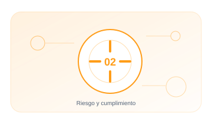

02 · PILAR
Riesgo y cumplimiento
Traducir normas y obligaciones en decisiones, controles y evidencias verificables.
EnfoqueTécnico, práctico y entendible
Contenido5 guías extensas y aplicables
Aplicable aOrganizaciones y sistemas reales

02.01 · GUÍA
EU AI Act
Clasifica el sistema. identifica el rol de la organización y construye un expediente de cumplimiento.
19–25 min+1.908 palabrasAbrir guía →
02.02 · GUÍA
ISO/IEC 42001
Implanta un sistema de gestión de IA integrable con ISO 27001 y otros sistemas de gestión.
20–26 min+1.997 palabrasAbrir guía →
02.03 · GUÍA
Evaluación de impacto de IA
Analiza efectos sobre personas. derechos. seguridad. negocio y sociedad antes del despliegue.
18–24 min+1.774 palabrasAbrir guía →
02.04 · GUÍA
Registro de riesgos de IA
Convierte preocupaciones difusas en escenarios. controles. propietarios y seguimiento.
18–24 min+1.780 palabrasAbrir guía →
02.05 · GUÍA
Clasificador de riesgo · AI Act INTERACTIVO
Responde y obtén la categoría de riesgo de tu sistema y sus obligaciones.
19–25 min+1.903 palabrasAbrir guía →
01
ClasificarControl y evidencia aplicable
02
EvaluarControl y evidencia aplicable
03
TratarControl y evidencia aplicable
04
EvidenciarControl y evidencia aplicable
05
RevisarControl y evidencia aplicable
Cada guía incluye explicación, implantación, controles, evidencias, errores habituales, métricas y referencias.